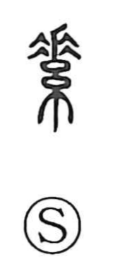

素

Uncategorized
Kun: moto, motoyori | On: so, su
raw material ・ base ・ white ・ white silk ・ original nature
Explanation
Shirakawa interprets 素 as a pictograph of thread in the act of dyeing: a bundle of strands is tied and plunged into the dye, and the section held by the tie remains undyed. That untouched white portion—moto, the material in its original state—became the character’s core meaning. From this image flow the senses of white silk and whiteness, then “base” and “raw material,” and by extension “from the outset” and the idea of an unadorned, original nature, as reflected in words for inborn qualities, birth and lineage, and ordinary family line.